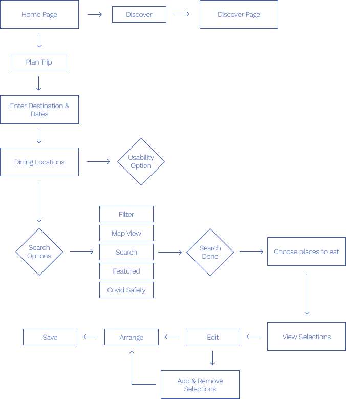
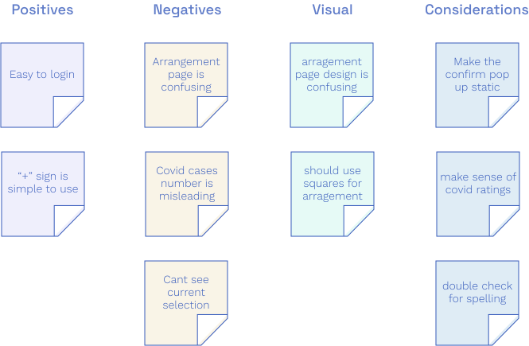

Munch
My Role
UX/UI Designer, User Researcher
Timeline
4 Weeks
Tools
Figma, Miro, Zoom
Year
2021

Project Overview
For this study I organized and conducted a variety of qualitative research tactics to understand how travelers intend to plan their future trips post pandemic. I was able to gain in-depth information about users underlying reasoning, motivations, and priorities when making travel arrangements.
“How might we add value to users who want great eating experiences while traveling”
About Munch
Munch is a conceptual application meant to help travelers and foodies alike find unique places to eat. This is done by providing its user base with a simple and intuitive way to create an itinerary of restaurants based around locations they wish to travel. The Munch database pulls the best places to eat in every city around the world based on local insight and user ratings.
Project Timeline
01
User Research
02
Define & Ideation
03
Prototyping
04
Testing & Iterating
Research
Proto Persona
Interview Plan
1. Introduce the purpose of the study
Find the travelers pain points regarding future trip planning
2. Introduce questions
Understand who the user base it
3. Clarification questions
Focus on what people are looking for most while traveling
4. End of interview
Thank the interviewees for sharing their experiences
Interview Findings
“Traveling allows me to step away from my comfort of home and explore new foods, customs, and experiences. It is one thing to see a destination on TV or online but to go there and enjoy what there is to offer is so much more fulfilling.” - Kathleen C.
Affinity Diagram
1.
Travelers want to find new places to eat now that covid is ending but still want to practice safety
2.
Travelers want to find new places to eat now that covid is ending but still want to practice safety

Empathy Map

Definition & Ideation
User Insight
Kate is a young elementary school teacher who is passionate about traveling and eating great food. She has had a difficult time trying to find new places to eat while traveling due to the pandemic forcing many places to close.
Problem Statement
With a passion for food and travel, Kate needs a way to quickly discover new places to eat and have up-to-date covid information. With this criteria, she will have more time to create unforgettable memories and relieve stress.
Ideation

Feature Prioritization Matrix

User Scenario
Kate is a young teacher who loves to travel and eat at unique places. Due to covid enforcing restriction on many local diners around the world, she has had a difficult time trying to find places to eat and keep up to date with restaurants current business status. She downloads munch and finds that she can see a list of recommended open restaurants in different cities that she’d like to travel to with up to date covid data. She plans her trip within the app to stay organized and receives notifications if anything changes. Kate is so happy with the process of planning out her foodie journey that she shares her favorite diners within the app with other app users.
1.
Kate wants to travel now that covid cases are starting to dwindle but is struggling to find where to eat.
2.
She downloads munch and sees a list of recommended places to eat and travel to.
3.
She chooses the places she most wants to eat at and plans a trip around them within the munch.
4.
Kate arrives at her selected destination, eats amazing food, then shares the experience with her friends and family.
Story Board
Prototyping
User Flow
Sketches
LoFi Design

Testing & Iterating
Guerilla Testing Plan
1.
Objective
To provide travel enthusiasts with a taste for great food ways to easily discover new places to eat while staying informed with the latest safety information wherever their taste buds take them.
2.
Target Users
I am targeting people who love to travel and consider themselves foodies.
3.
Questions
How easy is it to find places to eat in the app?
How useful are the apps features?
Are they any difficulties navigating or understanding the navigation?
4.
Tasks To Complete
Task 1:
Goal: Sign up for a new account.
Assumptions: User does not have an account.
Steps
1. Press "Signup"
2. Enter name, email & password
3. Upload profile photo (optional)
4. Set eating preferences
5. Enable location settings
Success Criteria: User successfully creates an account
Task 2:
Goal: Create a new food trip to Portland
Assumptions: User wants to make meal plans in Portland
Steps
1. Press “+” at bottom of screen
2. Select Location to Portland
3. Add restaurant to list
4. Confirm & select a preferred visiting time
5. Select “Done”
Success Criteria: User successfully add restaurant to new trip
Interview Findings & Notes
Bianca
Likes:
“I like that its picture based”
“I like how it gives you suggestions”
Frustrations
“What is that page”
“The Friday and Monday thing is confusing”
“It would be better if it was horizontal squares for scrolling”
Notes
• Make updates to the arrangement page
• Confused about the covid case count.
Daniel
Likes:
“That was pretty easy”
“Simple to select eating preferences”
“You don't really need to much direction”
Frustrations
“This page is confusing”
“I don't know what these lines are for”
Notes
• Confused about time arrangement page
• Skipped onboarding screen
Affinity Diagram
Iterations

Prototype